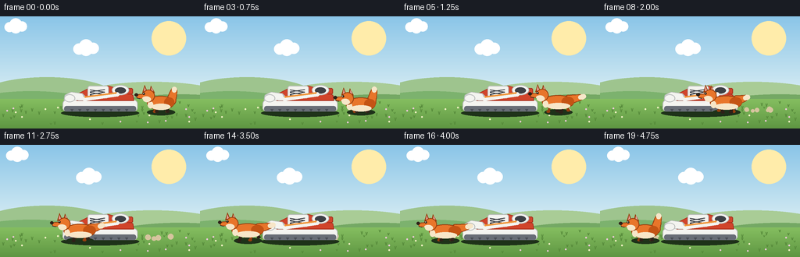
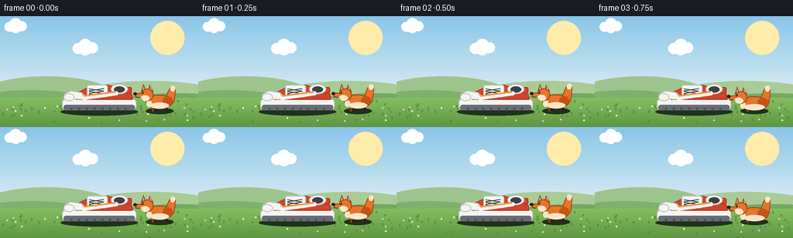

CODING AGENTS AS PIXEL WORLD MODELS
traex/Seed-2.1-Pro-0915 · dynamic_spatial_relationship_0030
点击播放 · 原生 RGB 像素
逐轮保存的候选
回放视频、检查图与代码变化。
每份候选均可单独播放。实际图片检查记录在下方工具轨迹中。
候选 01播放与检查图
点击播放 · 原生 RGB 像素


展开代码变化
--- 上一保存版本
+++ 本次保存版本
@@ -0,0 +1,411 @@
+"""Text-to-video: a fox right of a shoe runs to the front (toe side) of it.
+
+20 RGB frames, 256x144 @ 4fps. Everything is drawn procedurally with PIL at
+3x supersampling, then downsampled for soft cartoon edges.
+"""
+import math
+
+import numpy as np
+from PIL import Image, ImageDraw
+
+import artifact_io
+
+W, H, N, FPS = 256, 144, 20, 4.0
+SS = 3
+SW, SH = W * SS, H * SS
+
+# Palette
+SKY_TOP = (138, 197, 232)
+SKY_BOT = (222, 240, 244)
+SUN = (255, 236, 170)
+HILL_FAR = (158, 196, 142)
+HILL_NEAR = (124, 178, 110)
+GROUND_TOP = (133, 190, 96)
+GROUND_BOT = (94, 150, 66)
+GRASS_DARK = (86, 138, 58)
+
+ORANGE = (232, 117, 42)
+ORANGE_D = (196, 84, 20)
+ORANGE_DD = (150, 62, 14)
+CREAM = (247, 230, 200)
+DARK = (46, 33, 24)
+PINK = (231, 158, 152)
+
+SHOE_RED = (209, 68, 43)
+SHOE_RED_D = (165, 47, 28)
+SHOE_W = (244, 244, 240)
+SHOE_W_D = (185, 188, 187)
+SHOE_DARK = (61, 64, 70)
+SHOE_GRAY = (104, 109, 118)
+
+GROUND_Y = 122 # where paws / soles rest
+
+
+def sc(v):
+ return int(round(v * SS))
+
+
+def nbox(box):
+ return [sc(v) for v in box]
+
+
+def ellipse(d, box, fill, outline=None, width=1):
+ d.ellipse(nbox(box), fill=fill, outline=outline, width=sc(max(1, width)))
+
+
+def polygon(d, pts, fill, outline=None, width=1):
+ d.polygon([(sc(x), sc(y)) for x, y in pts], fill=fill)
+ if outline is not None:
+ d.line([(sc(x), sc(y)) for x, y in pts + [pts[0]]],
+ fill=outline, width=sc(width), joint="curve")
+
+
+def line(d, p1, p2, fill, width=1):
+ d.line([(sc(p1[0]), sc(p1[1])), (sc(p2[0]), sc(p2[1]))],
+ fill=fill, width=sc(width))
+
+
+def capsule(d, p1, p2, r, fill):
+ """Thick round-ended segment in native coordinates."""
+ line(d, p1, p2, fill, width=r * 2)
+ ellipse(d, (p1[0] - r, p1[1] - r, p1[0] + r, p1[1] + r), fill)
+ ellipse(d, (p2[0] - r, p2[1] - r, p2[0] + r, p2[1] + r), fill)
+
+
+def rounded_rect(d, box, radius, fill, outline=None, width=1):
+ d.rounded_rectangle(nbox(box), radius=sc(radius), fill=fill,
+ outline=outline, width=sc(max(1, width)))
+
+
+def lerp(a, b, t):
+ return a + (b - a) * t
+
+
+# ---------------------------------------------------------------- background
+
+def draw_background(d, frame):
+ # sky gradient
+ top = np.array(SKY_TOP, dtype=float)
+ bot = np.array(SKY_BOT, dtype=float)
+ horizon = 108
+ for y in range(sc(horizon) + 1):
+ t = y / sc(horizon)
+ col = tuple(int(c) for c in top + (bot - top) * t)
+ d.line([(0, y), (SW, y)], fill=col)
+ d.rectangle([0, sc(horizon), SW, SH], fill=SKY_BOT)
+
+ # sun with soft glow
+ sx, sy = sc(216), sc(28)
+ for r in (22, 17, 12):
+ rr = sc(r)
+ d.ellipse([sx - rr, sy - rr, sx + rr, sy + rr], fill=SUN)
+
+ # distant hills
+ ellipse(d, (-30, 78, 150, 132), HILL_FAR)
+ ellipse(d, (90, 84, 300, 134), (169, 204, 150))
+
+ # drifting clouds
+ clouds = [(-40 + (frame * 0.25) % 330 - 60, 22, 1.0),
+ (80 + (frame * 0.18) % 330 - 60, 12, 0.8),
+ (170 + (frame * 0.32) % 330 - 60, 40, 0.9)]
+ for cx, cy, k in clouds:
+ draw_cloud(d, cx, cy, k)
+
+ # near hill strip / field
+ ellipse(d, (-60, 96, 140, 150), HILL_NEAR)
+ ellipse(d, (120, 100, 340, 152), (116, 168, 100))
+
+ # ground
+ gt = np.array(GROUND_TOP, dtype=float)
+ gb = np.array(GROUND_BOT, dtype=float)
+ for y in range(sc(106), SH):
+ t = (y - sc(106)) / (SH - sc(106))
+ col = tuple(int(c) for c in gt + (gb - gt) * t)
+ d.line([(0, y), (SW, y)], fill=col)
+
+ # grass tufts and tiny flowers
+ rng = np.random.default_rng(7)
+ for _ in range(46):
+ gx = int(rng.integers(4, W - 4))
+ gy = int(rng.integers(112, H - 4))
+ h = int(rng.integers(2, 5))
+ line(d, (gx, gy), (gx - 1, gy - h), GRASS_DARK, 1)
+ line(d, (gx, gy), (gx + 1, gy - h), GRASS_DARK, 1)
+ for _ in range(14):
+ gx = int(rng.integers(6, W - 6))
+ gy = int(rng.integers(114, H - 6))
+ col = (250, 244, 200) if rng.random() < 0.5 else (240, 200, 220)
+ ellipse(d, (gx - 1, gy - 1, gx + 1, gy + 1), col)
+
+
+def draw_cloud(d, cx, cy, k):
+ for dx, dy, r in ((-10, 2, 8), (0, -2, 10), (10, 1, 8), (0, 3, 9)):
+ rr = r * k
+ ellipse(d, (cx + dx * k - rr, cy + dy * k - rr,
+ cx + dx * k + rr, cy + dy * k + rr),
+ (255, 255, 255))
+
+
+# ------------------------------------------------------------------- shoe
+
+def draw_shadow(d, cx, gy, rx, ry, alpha=70):
+ ellipse(d, (cx - rx, gy - ry, cx + rx, gy + ry), (30, 50, 25))
+
+
+def draw_shoe(d):
+ """Side-view sneaker, toe (front) pointing left."""
+ draw_shadow(d, 128, GROUND_Y + 2, 50, 5)
+
+ # sole
+ rounded_rect(d, (80, 107, 176, 122), 5, SHOE_W, SHOE_W_D, 1)
+ rounded_rect(d, (82, 115, 174, 122), 3, SHOE_GRAY)
+ for tx in range(90, 168, 10): # tread notches
+ polygon(d, [(tx, 119), (tx + 4, 119), (tx + 2, 122)], (74, 78, 86))
+
+ # red upper
+ polygon(d, [(98, 108), (100, 99), (114, 92), (138, 89),
+ (157, 94), (170, 101), (171, 108)],
+ SHOE_RED, SHOE_RED_D, 1)
+
+ # heel tab
+ rounded_rect(d, (162, 92, 170, 100), 2, SHOE_RED, SHOE_RED_D, 1)
+
+ # white toe cap (the front of the shoe)
+ polygon(d, [(82, 107), (83, 101), (91, 97), (105, 99),
+ (110, 104), (109, 108)],
+ SHOE_W, SHOE_W_D, 1)
+ ellipse(d, (82, 100, 96, 110), SHOE_W, SHOE_W_D, 1)
+ line(d, (106, 100), (108, 108), SHOE_W_D, 1) # cap seam
+
+ # ankle collar: white ring with dark opening
+ ellipse(d, (143, 88, 165, 101), SHOE_W, SHOE_W_D, 1)
+ ellipse(d, (147, 91, 161, 99), SHOE_DARK)
+
+ # tongue
+ rounded_rect(d, (112, 89, 139, 105), 3, SHOE_W, SHOE_W_D, 1)
+
+ # laces
+ for k in range(3):
+ y = 94 + k * 3.4
+ line(d, (115, y), (134, y + 3), SHOE_DARK, 1.4)
+ line(d, (134, y), (115, y + 3), SHOE_DARK, 1.4)
+
+ # side stripe
+ capsule(d, (108, 106), (150, 100), 2.6, SHOE_W)
+ capsule(d, (109, 103.2), (148, 98.2), 1.1, (240, 150, 60))
+
+
+# -------------------------------------------------------------------- fox
+
+def draw_leg(d, attach, foot, near, lifted):
+ upper = ORANGE if near else ORANGE_D
+ lower = DARK if near else ORANGE_DD
+ knee = ((attach[0] + foot[0]) / 2,
+ (attach[1] + foot[1]) / 2 - (4.5 if lifted else 2.2))
+ capsule(d, attach, knee, 2.0 if near else 1.7, upper)
+ capsule(d, knee, foot, 1.8 if near else 1.5, lower)
+ ellipse(d, (foot[0] - 2.4, foot[1] - 1.4, foot[0] + 2.4, foot[1] + 1.6),
+ DARK if near else ORANGE_DD)
+
+
+def draw_fox(d, x, gy, *, running, phase, bob, stream, tail_t,
+ crouch=0.0, skid=0.0):
+ """Draw a left-facing fox. x is body center, gy ground line."""
+ by = gy - 11 - bob + crouch * 2
+
+ # ---- tail (behind body): quadratic curve up and back ----
+ base = (x + 13, by - 3)
+ ang = math.radians(-14 - 60 * (1 - stream))
+ length = 15 + 2 * stream
+ tip = (base[0] + length * math.cos(ang) + math.sin(tail_t) * 3 * stream,
+ base[1] + length * math.sin(ang)
+ - abs(math.sin(tail_t)) * 3 * (1 - stream))
+ ctrl = ((base[0] + tip[0]) / 2 + 2,
+ (base[1] + tip[1]) / 2 - 7 * (1 - stream))
+
+ def curve(u):
+ return ((1 - u) ** 2 * base[0] + 2 * (1 - u) * u * ctrl[0]
+ + u ** 2 * tip[0],
+ (1 - u) ** 2 * base[1] + 2 * (1 - u) * u * ctrl[1]
+ + u ** 2 * tip[1])
+
+ # outline pass, then fur, then cream tip
+ steps = 9
+ for i in range(steps):
+ u = i / (steps - 1)
+ px, py = curve(u)
+ r = lerp(6.2, 3.0, u)
+ col = ORANGE_DD if u < 0.78 else CREAM
+ ellipse(d, (px - r, py - r, px + r, py + r), col)
+ for i in range(steps):
+ u = i / (steps - 1)
+ px, py = curve(u)
+ r = lerp(5.2, 2.2, u)
+ col = ORANGE if u < 0.72 else CREAM
+ ellipse(d, (px - r, py - r, px + r, py + r), col)
+
+ # ---- legs ----
+ if running:
+ specs = [ # (attach offset x, phase, near)
+ (-8, phase + math.pi, False),
+ (8, phase, False),
+ (-6, phase, True),
+ (9, phase + math.pi * 0.92, True),
+ ]
+ else:
+ specs = [(-8, 0, False), (8, 0, False),
+ (-6, 0.3, True), (9, -0.3, True)]
+
+ for ax, ph, near in specs:
+ attach = (x + ax, by + 4)
+ if running:
+ swing = math.sin(ph) * 6.5
+ lift = max(0.0, math.sin(ph + 0.5)) * 5
+ foot = (attach[0] + swing, gy - lift + (1 if near else 0))
+ draw_leg(d, attach, foot, near, lift > 1.5)
+ else:
+ foot = (attach[0] + math.sin(ph) * 2.2, gy)
+ draw_leg(d, attach, foot, near, False)
+
+ # ---- body ----
+ tilt = (3.0 if running else 0.0) + skid * 3 + crouch
+ ellipse(d, (x - 18 - tilt, by - 9, x + 17 + tilt, by + 9), ORANGE_DD)
+ ellipse(d, (x - 17 - tilt, by - 8, x + 16 + tilt, by + 8), ORANGE)
+ # haunch + belly
+ ellipse(d, (x + 4, by - 7, x + 17 + tilt, by + 5), ORANGE_D)
+ ellipse(d, (x - 12 - tilt, by + 1, x + 12 + tilt, by + 9), CREAM)
+ # chest fluff
+ ellipse(d, (x - 17 - tilt, by - 2, x - 10 - tilt, by + 7), CREAM)
+
+ # ---- head ----
+ hx = x - 16 - tilt - (1.5 if running else 0)
+ hy = by - 9 + crouch
+ ear_back = 2.0 if running else 0.0
+
+ # ears (drawn first so head overlaps bases)
+ polygon(d, [(hx + 1 - ear_back, hy - 4),
+ (hx + 3 - ear_back, hy - 13),
+ (hx + 8 - ear_back, hy - 4)],
+ ORANGE_DD)
+ polygon(d, [(hx + 3 - ear_back, hy - 6),
+ (hx + 4 - ear_back, hy - 11),
+ (hx + 6 - ear_back, hy - 6)],
+ PINK)
+ polygon(d, [(hx - 8 - ear_back * 0.5, hy - 4),
+ (hx - 5 - ear_back * 0.5, hy - 14),
+ (hx - 1 - ear_back * 0.5, hy - 4)],
+ ORANGE_DD)
+ polygon(d, [(hx - 6 - ear_back * 0.5, hy - 6),
+ (hx - 5 - ear_back * 0.5, hy - 11.5),
+ (hx - 3 - ear_back * 0.5, hy - 6)],
+ PINK)
+
+ # head + cheek
+ ellipse(d, (hx - 8, hy - 8, hx + 8, hy + 8), ORANGE_DD)
+ ellipse(d, (hx - 7, hy - 7, hx + 7, hy + 7), ORANGE)
+ ellipse(d, (hx - 7, hy + 1, hx + 3, hy + 8), CREAM)
+
+ # snout pointing left
+ polygon(d, [(hx - 5, hy - 3), (hx - 16, hy - 2),
+ (hx - 15, hy + 3), (hx - 4, hy + 4)],
+ ORANGE_DD)
+ polygon(d, [(hx - 5, hy - 2), (hx - 15, hy - 1),
+ (hx - 14, hy + 2.5), (hx - 4, hy + 3.4)],
+ ORANGE)
+ ellipse(d, (hx - 8, hy + 0.5, hx + 2, hy + 5.5), CREAM)
+ # nose, mouth, eye
+ ellipse(d, (hx - 18, hy - 3.4, hx - 13.5, hy + 0.6), DARK)
+ line(d, (hx - 15, hy + 2.6), (hx - 11, hy + 3.6), DARK, 1)
+ ellipse(d, (hx - 7.6, hy - 4.2, hx - 4.6, hy - 1.2), DARK)
+ ellipse(d, (hx - 7.0, hy - 3.8, hx - 6.0, hy - 2.8), CREAM)
+
+
+# ------------------------------------------------------------- dust system
+
+class Dust:
+ def __init__(self):
+ self.puffs = []
+
+ def spawn(self, x, y, n=2):
+ for _ in range(n):
+ self.puffs.append([x + np.random.uniform(-3, 3),
+ y + np.random.uniform(-2, 1),
+ np.random.uniform(1.2, 2.6), 0])
+
+ def update(self):
+ for p in self.puffs:
+ p[0] += 0.55
+ p[1] -= 0.35
+ p[2] += 0.22
+ p[3] += 1
+ self.puffs = [p for p in self.puffs if p[3] < 7]
+
+ def draw(self, d):
+ for x, y, r, age in self.puffs:
+ ellipse(d, (x - r, y - r, x + r, y + r), (214, 196, 158))
+
+
+# ----------------------------------------------------------------- frames
+
+def smoothstep(t):
+ return t * t * (3 - 2 * t)
+
+
+def make_frame(i, dust):
+ img = Image.new("RGBA", (SW, SH), (0, 0, 0, 0))
+ d = ImageDraw.Draw(img)
+ draw_background(d, i)
+
+ dust.draw(d)
+ draw_shoe(d)
+
+ if i < 4: # idle, right of the shoe
+ x = 206
+ running = False
+ phase = 0
+ bob = math.sin(i * 0.8) * 0.4
+ stream = 0.0
+ tail_t = i * 0.7
+ crouch = 1.2 if i == 3 else 0.0 # little wind-up
+ elif i <= 15: # sprint leftward
+ t = smoothstep((i - 4) / 11)
+ x = lerp(206, 58, t)
+ running = True
+ phase = (i - 4) * 2.3
+ bob = abs(math.sin(phase)) * 1.5
+ stream = 1.0
+ tail_t = phase * 0.6
+ crouch = 0.0
+ dust.spawn(x + 8 + math.sin(phase) * 4, GROUND_Y - 1, n=2)
+ else: # arrived at the toe
+ x = 58
+ running = False
+ phase = 0
+ bob = 0
+ stream = max(0.0, 1.0 - (i - 16) * 0.5)
+ tail_t = i * 0.9
+ crouch = 0.0
+ if i == 16:
+ dust.spawn(x + 10, GROUND_Y - 1, n=5)
+
+ skid = 1.0 if i == 16 else 0.0
+ draw_shadow(d, x, GROUND_Y + 1, 18, 4)
+ draw_fox(d, x, GROUND_Y, running=running, phase=phase, bob=bob,
+ stream=stream, tail_t=tail_t, crouch=crouch, skid=skid)
+
+ dust.update()
+ out = img.resize((W, H), Image.Resampling.LANCZOS).convert("RGB")
+ return np.asarray(out, dtype=np.uint8)
+
+
+def main():
+ dust = Dust()
+ frames = [make_frame(i, dust) for i in range(N)]
+ frames = np.stack(frames)
+ assert frames.shape == (N, H, W, 3), frames.shape
+ artifact_io.save(frames, ".")
+ print(f"saved {N} frames {W}x{H} @ {FPS}fps")
+
+
+if __name__ == "__main__":
+ main()
可观测工具轨迹
实际执行的命令与返回图片。
命令 1exit 0
/bin/bash -lc 'ls -la && cat prompt.txt && cat GENERATION_RULES.md && cat task_spec.json'
命令 2exit 0
/bin/bash -lc 'cat artifact_io.py && cat player_template.html'
命令 3exit 0
/bin/bash -lc 'cd . && python generate.py && ls -la'
命令 4exit 0
/bin/bash -lc "cd . && python - <<'EOF'
import numpy as np
d = np.load('pixels.npz')['pixels'] # H,W,N packed
print('tensor:', d.shape)
for i in list(range(20)):
p = d[:,:,i]
r = (p>>16)&255; g=(p>>8)&255; b=p&255
# fox orange: high R, medium G, low B; exclude shoe red (low G)
fox = (r>180)&(g>60)&(g<170)&(b<90)&((r.astype(int)-b)>110)
ys, xs = np.where(fox)
cx = xs.mean() if len(xs) else -1
# shoe red: r high, g low
shoe = (r>150)&(g<90)&(b<90)
sy, sx = np.where(shoe)
toe = sx.min() if len(sx) else -1
heel = sx.max() if len(sx) else -1
print(f'f{i:02d}: fox_x={cx:6.1f} n={len(xs):5d} | shoe toe={toe:3d} heel={heel:3d} | rel: {\"RIGHT\" if cx>heel else (\"IN FRONT(left)\" if cx<toe+20 else \"over\")}')
EOF"命令 5exit 0
/bin/bash -lc "cd . && python - <<'EOF'
import numpy as np
from PIL import Image
for fi in (0, 7, 13, 19):
im = np.asarray(Image.open(f'frames/{fi:02d}.png').convert('L'))
# crop scene area y=80..144, downsample 4x2
crop = im[80:144, :]
h, w = crop.shape
small = crop.reshape(h//2, 2, w//4, 4).mean(axis=(1,3))
print(f'--- frame {fi} ---')
for row in small:
print(''.join(' .:-=+*#%@'[min(9, int(v/26))] for v in row))
EOF"命令 6exit 0
/bin/bash -lc "cd . && python - <<'EOF'
import numpy as np
d = np.load('pixels.npz')['pixels']
# frame-to-frame motion
for i in range(1, 20):
diff = np.count_nonzero(d[:,:,i] "'!= d[:,:,i-1])
print(f'"'diff {i-1:02d}->{i:02d}: {diff:6d} px')
# shoe region static? shoe bbox approx x70-180, y85-125
region = d[85:125, 70:180, :]
changes = sum(np.count_nonzero(region[:,:,i] "'!= region[:,:,0]) for i in range(20))
print('"'shoe-region cumulative changed px:', changes)
# fox bbox over time, orange strict (exclude shoe red by g>70)
for i in (0,3,4,9,12,15,16,19):
p=d[:,:,i]; r=(p>>16)&255; g=(p>>8)&255; b=p&255
fox=(r>200)&(g>70)&(g<160)&(b<80)
ys,xs=np.where(fox)
print(f'f{i:02d} fox bbox x[{xs.min()},{xs.max()}] y[{ys.min()},{ys.max()}]')
# sanity: no pure-black frames, ranges
print('value range:', d.min(), d.max(), 'shape', d.shape)
EOF
ls frames | head -25"命令 7exit 0
/bin/bash -lc "cd . && python - <<'EOF'
import numpy as np
d = np.load('pixels.npz')['pixels']
# strict fox orange, mask out the shoe stripe band (y 96-107, x 100-155)
for i in (0,1,2,3,4,9,12,15,16,17,19):
p=d[:,:,i]; r=(p>>16)&255; g=(p>>8)&255; b=p&255
fox=(r>200)&(g>70)&(g<160)&(b<80)
fox[96:108, 100:156] = False
ys,xs=np.where(fox)
print(f'f{i:02d} fox centroid x={xs.mean():6.1f} bbox[{xs.min()},{xs.max()}] (shoe spans ~x70-176, toe ~x80)')
EOF"保存候选 1 份；完成命令 7 次；可验证图片返回 0 张。原始 API 响应与完整日志保留在本地。